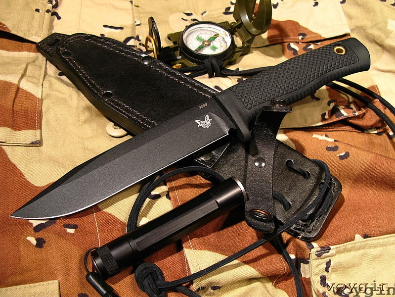
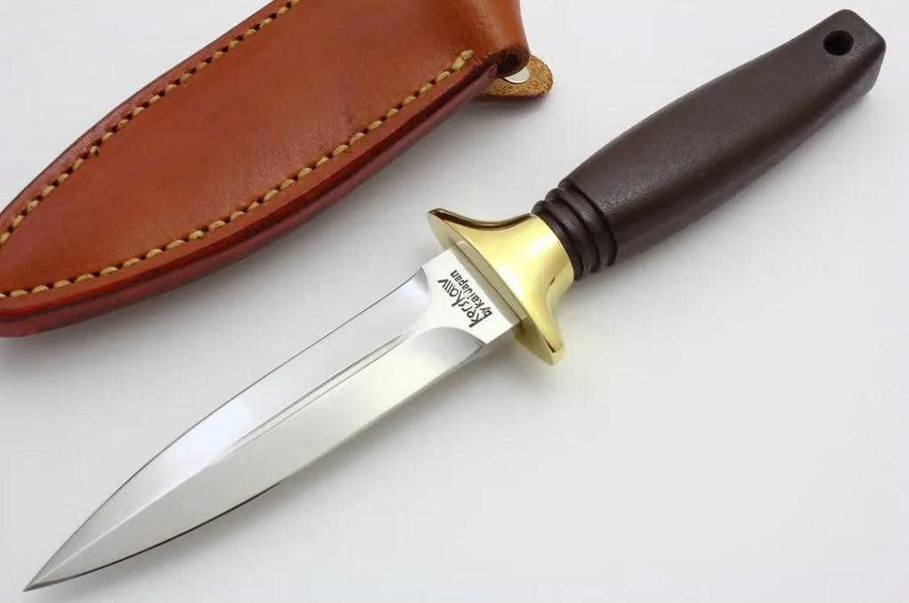

Spyderco
Среди продукции компании наиболее известны складные ножи, для удобства
открывания которых одной рукой в клинке проделано круглое отверстие.
В настоящее время каталог производимых моделей насчитывает более 180 единиц, включая складные ножи,
ножи с фиксированным клинком и кухонные ножи.
Benchmade

Первоначально основной продукцией Benchmade были ножи-бабочки, или балисонги, которые она до сих пор
производит.
Изделия Benchmade по характеру дизайна и материалов являются высококачественной продукцией на рынке
ножей. Для многих моделей используются марки стали высшего сорта, такие как 154CM, D2 и CPM S30V.
Kershaw_Trooper

Kershaw Knives разрабатывает, поставляет и производит широкий ассортимент ножей , включая складные
ножи, спортивные ножи и кухонные столовые приборы.
А также ножи премиум-класса, разработанные в свободном сотрудничестве с индивидуальными ножами.
производители
для правоохранительных органов и военных рынков.